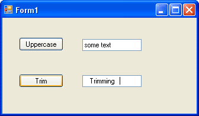
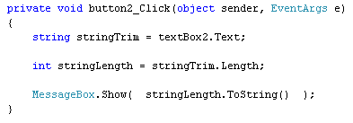
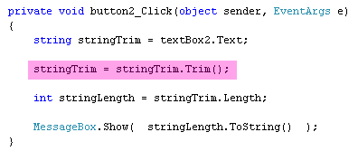
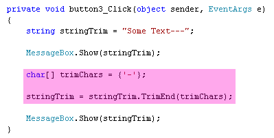

Trim Unwanted Characters in C# .NET
<< Continues from the previous lesson
If you have another look at the Method list, you'll see that there are three that deal with Trimming: Trim, TrimEnd and TrimStart. These methods can be used to Trim unwanted characters from strings.
Add another button to your form. You can change the Text property of your buttons. Enter the text "Uppercase" for the first one. For the new button, enter Trim for the text property. Add another text box below the first one and set the Text property as follows:
" Trimming "
Leave out the double quotes but tap the spacebar on your keyboard three times
before you type the text. At the end of the text, tap the spacebar three more
times. Your Form should then look like this:

The line in the second text box is where the cursor is.
Now double click your second button to get at the code. We can count the number of characters a string has with the Length property. Enter the following code for your button:

The first line just gets the text from the text box and puts it into a variable called stringTrim. Have a look at the second line, though:
int stringLength = stringTrim.Length;
We've set up a new integer variable called stringLength. To get the length of a string, type a dot after your string variable name. From the IntelliSense list, select the Length property. Note that you don't need any round brackets, because it's a property not a method. The Length of a string, by the way, refers to how many characters is in the string.
The third line uses a MessageBox to display the result:
MessageBox.Show( stringLength.ToString() );
You've seen the ToString method before. This can be used to convert numbers to a string a text. So "10" instead of 10. (The double quotes mean it's text. Without the quotes, it's a number. The variable called stringLength will hold a number.)
Run your programme and click the Trim button on your form. The message box should display an answer of 14. The word "Trimming", however, only has 8 characters in it. The other 6 are the three spaces we put at the beginning and end of the word.
To get rid of space at the beginning and end of text, you can use the Trim method. Add the following line of code to your button:

The code to add is highlighted, in the image above. It's this:
stringTrim = stringTrim.Trim();
So after the dot of the stringTrim variable, you select the Trim method from the IntelliSense list, followed by a pair of empty round brackets. Run your programme and click the button again. You should find that the length is now 8. So Trim has trimmed the blank spaces from the beginning and the end of our word.
If you only wanted to trim the blank spaces at the end of the word, or just the blank spaces at the beginning of the word, you can use TrimEnd and TrimStart:
stringTrim = stringTrim.TrimStart( null );
TrimStart and TrimEnd are supposed to take a character array as a parameter. If you type the keyword null instead, it will trim the white space (blank characters).
Just as a reference for you, here's some code that strips unwanted hyphens off the end of a string:

The trimChar line is a character array ( char[ ] ) with the hyphen in between curly brackets. This is then handed to the TrimEnd method as a parameter.
In the next lesson, we'll take a look at the Contains method.